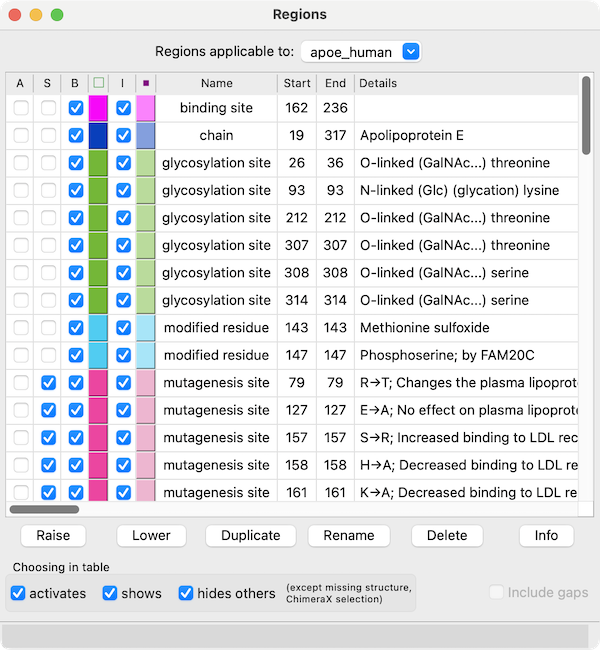
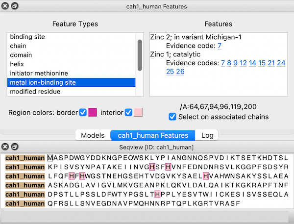

|
| Models #1 1bzm and #2 1urt associated with sequences in an alignment, with ChimeraX selection sequence region. |
The Sequence Viewer displays individual sequences and sequence alignments of amino acids and nucleotides, with crosstalk to any associated structures. Some of its functions are implemented in the sequence command. To find and select a specified sequence or sequence pattern, use Select... Sequence in the menu or the select command. See also: Profile Grid, Modeller Comparative, Model Loops, Coloring by Sequence Conservation
Sequences for biopolymer structures in ChimeraX can be shown:
Other ways to start the Sequence Viewer: Independent of structure, sequence alignments and individual sequences can also be opened from files or fetched from UniProt. Other tools or commands may generate new sequence alignments (e.g., Blast Protein results, Matchmaker, sequence realignment).
For alignments with very large numbers of sequences, it may be preferable to use Profile Grid instead of the Sequence Viewer. The size threshold for deciding which viewer to use can be adjusted in the Sequences preferences, although it can be overriden with the open command viewer option (e.g., viewer grid indicates using Profile Grid regardless of the alignment size). Multiple Sequence Viewer windows can be shown at the same time, and they can be manipulated like other panels in ChimeraX (more...).
Context Menu
Headers and Residue Attributes
Regions
Region Browser
UniProt Sequence Features
Sequence-Structure Association
Structure Superposition
Settings
Each Sequence Viewer window has a context menu with choices including:
Sequence headers are rows of information above the sequences, such as a Consensus sequence, Conservation histogram, or histogram of the RMSD (root-mean-square displacement) among multiple associated structures. Which headers are shown initially and how they are calculated can be controlled in the Headers settings. Headers for a specific window can be shown, hidden, or saved to a file with the Sequence Viewer context menu or the sequence header command. Numbering can also be controlled using the Sequence Viewer context menu.
Per-column header values are assigned as attributes of the structure residues associated with sequences in the alignment. The numerical attributes (those from headers displayed as histograms) are named “seq_name,“ where name is the name of the header, for example, seq_conservation or seq_rmsd. The structures can be colored to show the values of such numerical attributes, as in the tutorial: Coloring by Sequence Conservation. See also the video Coloring Aligned Proteins by Cα RMSD.
A seq_identity residue attribute is also created automatically (regardless of headers) when a structure is associated with an alignment of at least two sequences. It is the percentage of a column that contains the most common nongap character in that column, and it does not depend on the type of the associated residue(s). See also: sequence refreshAttrs
Sequence regions are colored boxes or outlines that enclose one or more residue symbols. A single region may contain any number of disjoint and/or abutting boxes. Pausing the cursor over a region (but not directly over a residue symbol) shows its name in a pop-up balloon.
Some regions are created automatically, such as by association with a structure. Regions can also be created manually by dragging within the sequence window. Manually created regions are shown in this color (default, see Regions settings). The display and colors of existing regions can be controlled with the Region Browser.
The active region is the region most recently clicked, created by dragging, or designated as Active in the Region Browser. The active region is indicated with a dashed outline, and the corresponding parts of any associated structures are selected. Shift-dragging with the left mouse button adds to the active region, whereas Ctrl-dragging creates a new region and makes it the active region. (On Mac, command key replaces Ctrl.) Backspace/delete deletes the active region. Clicking the active region deactivates it, and clicking a different region deactivates the former active region and makes the new region active. A region with no interior color is only responsive to clicks on its borders. Where regions overlap, only the highest is responsive to clicks.
|  |
← Region Browser
The Region Browser can be opened by choosing Annotations... Regions... from the context menu.
Regions applicable to the entire alignment or to any of the individual sequences in the alignment can be listed using the pulldown menu near the top of the dialog. Regions applicable to the entire alignment include the ChimeraX selection and any hand-drawn regions, even if they only enclose parts of a single sequence. Regions applicable to an individual sequence include UniProt sequence features and regions created by structure association.
Region Browser columns:
If Include gaps is turned off (unchecked), the chosen region(s) will be drawn to enclose only residues, not gap positions. Although a given region may then appear as disjoint blocks, it will still be a single region.
Since regions may overlap, a region can be considered higher or lower than another. When the mouse focus is in the sequence window, the up arrow and down arrow keys can be used to raise and lower the active region, respectively, and pressing the Delete key will delete the active region. Alternatively, Region Browser buttons can be used to act on the chosen region(s):
|  |
← UniProt Sequence Features
Sequences fetched from UniProt may include several annotations. These “sequence features” are automatically assigned as regions in the sequence window. The features are hidden by default, but a dialog for browsing and displaying them appears when the sequence is first opened. This dialog can be reshown at any time by choosing Annotations... Sequence Features... from the context menu.
Choosing a feature type on the left side of the dialog shows the regions for all features of that type; if multiple features of that type are listed on the right, clicking (choosing) any one shows just the region for the individual feature. When the dialog has mouse focus, starting to type the name of a feature type instantly chooses that entry. The up and down arrow keys can also be used to navigate the dialog. Feature listings may include links to evidence code descriptions in the Evidence & Conclusion Ontology and/or sequence variant entries in dbSNP.
The border and interior colors of the currently shown feature region(s) can be changed by clicking the color wells and using the system color editor, and checkboxes allow leaving either the border or the interior uncolored. Region colors can also be changed using the Region Browser. The initially assigned colors may vary between different instances of opening the same data.
If a structure is associated with the sequence, the corresponding structure residues are listed in the lower right area of the dialog. For example, the figure shows all metal ion-binding site regions in UniProt sequence cah1_human, corresponding to residues 64,67,94,96,119, and 200 in chain A of the associated structure, PDB 1bzm. A checkbox option allows automatically selecting the associated structure residues (if any) as features are chosen.
A sequence that arose from a structure's chain information is automatically associated with that chain, with regions for protein structure helices and structure strands. Such sequences are closed when their structure chains are deleted or closed, and they are not automatically associated with other structure chains.
When sequences and structures are opened independently, a structure chain will be associated automatically with a sequence if their sequences can be aligned without mismatches exceeding 1/10 of the residues in the structure chain. The association and number of mismatches will be reported in the Log. For automatic association,
For manual association, both of the above are allowed, but only the “extra” residues in the structure not associated with any positions in the sequence (minus the length difference if the structure sequence is longer) are counted along with mismatches and reported in the Log.
Associations can be controlled manually (forced or removed):
In the sequence window, regions may be created to show mismatches and missing residues according to the association. If a mismatch or missing residue only occurs in a subset of multiple associated chains, a pink box or gray outline is shown instead (default, see Regions settings).
Further effects of association:
Structure... Match in the Sequence Viewer context menu allows structures to be superimposed based on the alignment of their associated sequences. The Reference chain should be chosen from the menu on the left, and one or more Match chain(s) chosen from the list on the right. Residues in each match chain are paired with the aligned (in the sequence alignment) residues of the reference chain. If both chains are associated with the same sequence, the correspondence is even more obvious. Fitting uses one point per residue: CA in amino acid residues and C4' in nucleic acid residues. If a nucleic acid residue lacks a C4' atom (some lower-resolution structures are P traces), its P atom will be paired with the P atom of the aligned residue. The number of atom pairs fitted and the resulting RMSD are reported in the Log and the status line at the bottom of the ChimeraX window.
Only match residues in columns with at least [N]% identity – whether the least-squares fit should use only the alignment columns with at least the specified percent identity (default 80%)
Iterate by pruning long atom pairs until no pair exceeds [x] angstroms refers to an iterative fitting procedure: in each cycle, atom pairs are removed from the match list and the remaining pairs are fitted, until no matched pair is more than x apart (default 2.0 Å). The atom pairs removed are either the 10% farthest apart of all pairs or the 50% farthest apart of all pairs exceeding the cutoff, whichever is the lesser number of pairs. The result is that the best-matching “core” regions are maximally superimposed; conformationally dissimilar regions such as flexible loops are not included in the final fit, even though they may be aligned in the sequence alignment.
Match active region only – whether the fit should only use columns in the active region of the alignment
Create region showing matched residues – whether to create a region named matched residues containing only the residues paired in the final fit
Apply superimposes the structures without dismissing the dialog, whereas OK also dismisses the dialog. Help opens this page in a browser window. See also: sequence match, Matchmaker
Choosing Settings... from the Sequence Viewer context menu shows its settings in a separate window, with sections:
The settings window can be manipulated like other panels in the ChimeraX interface (more...).
Save saves the current settings as preferences, Reset replaces the current settings with the initial “factory” defaults (values shown in bold below), and Restore restores values that were saved previously. The Buttons below... option indicates whether these buttons should apply only to the currently shown section (e.g., Appearance) or to all of the Sequence Viewer preferences. Although there can be multiple settings windows with different values for multiple Sequence Viewer windows, there can be only one set of saved preference values.
← Appearance – how text is displayed in the Sequence Viewer window
← Headers – rows of information above the sequences in an alignment (more...)
AL2CO: calculation of positional conservation in a protein sequence alignment. Pei J, Grishin NV. Bioinformatics. 2001 Aug;17(8):700-12.Conservation values from AL2CO are in standard deviations from the mean (Z-scores) and can range from –∞ (least conserved) to +∞ (most conserved). For purposes of histogram display only, the values are mapped to bar heights 0-1, with conservation values of zero giving a histogram bar height of 0.5.
When more than one chain per model is associated with the same alignment, the RMSD calculation uses only the chain that gives the lowest overall RMSD.
← Regions – creation and display of regions (colored boxes)
The Regions section of settings controls whether different types of regions should be shown, and if so, their initial colors. Each color well can be clicked to choose a color interactively. On/off checkboxes indicate whether to color the region border (box outline) and/or interior (box fill), whereas full and partial refer to whether the region applies to all structures associated with a position or to only some fraction of those structures.
{kind=link}